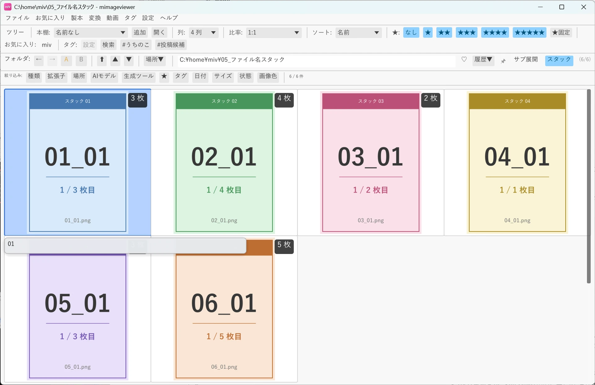

ファイル名スタックで一覧をすっきり
同じ投稿の連番ページや連写した写真が並ぶと、一覧が縦に長くなって見渡しにくくなります。 「スタック」表示は、似たファイル名・連番・撮影タイミングの画像を自動でひとまとめにして、 1 つのセルに畳んでくれる機能です。
スタックを ON にする
フォルダバー右端にある 「スタック」 トグルを ON にするだけです。 畳まれたスタックには、まとめた枚数のバッジが右上に付きます。まとめる相手がいない 1 枚だけの画像は、 畳まれずにそのまま表示されます。
何が 1 つのセルに畳まれるかは自動判定です。下の例では、01_01〜06_05 という
「番号＋_＋番号」の名前を付けた画像が、先頭の番号ごとに 6 つのスタックへ畳まれています
（スタックごとに背景色を変えたサンプルです）。複数枚のスタックには右上に枚数バッジが付き、
まとめる相手がいない 04 だけは畳まれず、バッジも付かずにそのまま並びます。

04 は畳まれずそのまま並びます。どんな画像がまとまる？（既定のルール）
まとめ方は、いくつかのルールを上から順に試して決まります。あるルールがフォルダ内の すべての画像に当てはまり、かつ 2 つ以上のスタックに分かれるときだけ採用します。 フォルダ全体が 1 個のスタックに潰れるルールは採用しません。どれにも当てはまらなければ 何も畳みません。
| 順 | まとまり方 | ファイル名の例 |
|---|---|---|
| 1 | 決まった形のファイル名（配布ダウンローダの命名など、末尾の飾りが同じで番号だけ変わるもの） | …_p01_m01_@user / …_p02_m01_@user |
| 2 | ファイル名の末尾が連番・ページ番号。番号の手前でまとめます | name_001 / name_002、id_p0 / id_p1 |
| 3 | ファイル名の先頭が連番。番号が途切れずに続くかたまりごとにまとめます | 0001_xxx / 0002_xxx |
| 4 | 更新時刻が近い連写写真（既定は 5 秒以内） | 連写した IMG_1234 / IMG_1235 |
上のサンプルは、ルール 2（末尾が連番）がすべての画像に当てはまった例です。判定はフォルダ内の様子を見て 決まるので、フォルダごとに畳まれ方が変わることがあります。
集約表示とフラット表示を切り替える
「スタック」トグルの ON / OFF が、そのまま集約表示（畳む）とフラット表示（畳まず全部並べる）の切り替えです。 この ON / OFF は今のフォルダだけの一時的な見せ方で、別のフォルダへ移動すると自動的に解除されます。 ファイルそのものが移動・変更されるわけではありません。
スタックを開いて続けて読む
畳まれたスタックをダブルクリック、または Enter で開くと、フルスクリーン表示に入ります。 スタックの中だけでなく、フォルダ全体を 1 枚ずつ続けて読み進められます。
| キー | 動作 |
|---|---|
| ↓ / ↑ | すべての画像を 1 枚ずつ順送り（スタックの境界を越えて進みます） |
| Shift+↓ / ↑ | 次 / 前のスタックの先頭画像へジャンプ |